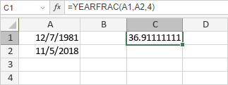

YEARFRAC funkcija
Funkcija YEARFRAC je jedna od funkcija za datum i vreme. Koristi se da vrati deo godine koji predstavljaju celokupni dani od start_date do end_date, izračunato na osnovu specificirane metode brojanja dana.
Sintaksa
YEARFRAC(start_date, end_date, [basis])
YEARFRAC funkcija ima sledeće argumente:
| Argument | Opis |
|---|---|
| start_date | Broj koji predstavlja prvi datum perioda, unet korišćenjem DATE funkcije ili druge funkcije za datum i vreme. |
| end_date | Broj koji predstavlja poslednji datum perioda, unet korišćenjem DATE funkcije ili druge funkcije za datum i vreme. |
| basis | Osnova za brojanje dana, numerička vrednost od 0 do 4. Moguće vrednosti su navedene u tabeli ispod. |
Argument basis može biti jedna od sledećih vrednosti:
| Numerička vrednost | Metoda brojanja dana |
|---|---|
| 0 | US (NASD) 30/360 |
| 1 | Stvarno/stvarno |
| 2 | Stvarno/360 |
| 3 | Stvarno/365 |
| 4 | Evropski 30/360 |
Napomene
Ako je start_date, end_date ili basis decimalna vrednost, funkcija ignoriše cifre desno od decimalne tačke.
Kako primeniti YEARFRAC funkciju.
Primeri
Na slici ispod prikazan je rezultat koji vraća YEARFRAC funkcija.
